Recommended: run this notebook in Google Colab, nothing to install.
Just click on the “Open in Colab” button and follow along. Click the ▶ button on each cell (or press Shift+Enter) to see the results and move on to the next one.
If you can’t or don’t want to use Colab, the documentation website shows the pre-run results.
Session 4: How Navigate solves#
Session 3 showed how the case of Session 1 is built and the data behind it. This session follows Navigate as it solves that case: how it decides, step by step, for the shipowners, operators and fuel producers, the results it produces, and how much the owners’ behaviour matters.
![Map of the Chile to Rotterdam copper trade: the two bunker ports, a fleet of ships on the voyage via the Panama Canal, and the fuel production sites in Patagonia and southern Sweden, both of which make e-methanol and e-ammonia, with bio-methanol in Sweden as well]()
San Antonio to Rotterdam via the Panama Canal: the two bunker ports, the voyage, and the possible fuel plants.
What you’ll do#
Part 1: Understand the logic behind the model. Understand how Navigate decides, for the shipowners and operators and for the fuel producers, and see the results it produces.
Part 2: How much behaviour matters. Change how sharply the fleet and plant owners decide and see what it does to the results.
Setup#
Run the cell below on Colab or locally to set up the Navigate model. It also loads the pre-made example that will be used to illustrate this part of the workshop.
Already at the repository root.
Navigate 1.0.0 is already installed.
Part 1: Understand the logic behind the model#
The idea of Navigate is to mimic the decision behaviour of shipowners, operators and fuel producers to understand how the fleet transition may evolve under a given set of conditions.
The aim of this section is to go “inside Navigate’s mind” and understand how the model solving actually works, step by step.
One time step, from the inside#
Stage 0 — Initialisation#
A time step starts with an initialisation. It inherits a fleet with an age structure, plants that were sanctioned years ago, and two regulations whose terms for this year are already fixed.
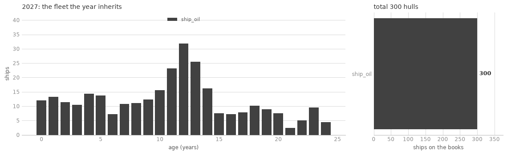
25 live cohorts: decisions are taken per cohort, against that cohort's own remaining life.
this year's regulatory terms:
eu_ets unit cost 133.4 USD/ton limit: no free allowance
fuel_eu unit cost 760.0 USD/ton limit: 89.34 gCO2eq/MJ
Stage 1 — Look ahead#
In this step, the operators calculate the costs of different bunkering strategies for the different available fuels, given:
the expected future compliance costs (induced by regulations)
the expected fuel costs
how much of each fuel the ports can supply, and how much fits in the tanks
The operators calculate the expected optimal strategy for the fleet and evaluate: how many tons of which fuel to buy at which port, the cheapest strategy between switching fuel and paying the regulation penalty. It is solved for the whole fleet at once — in fact for every fleet in the simulation — so the ships compete for the same supply. The expenses of newbuild ships, retrofits, etc. are not considered at this stage yet.
The cheapest bunkering strategy is solved forward: one optimisation for each remaining year out to 2050, run one after another.
The step hands a cost path per option to the stages below, and that is what the investment decisions are made on. It produces a second output as well: the fuel scarcity signal. For every ship and every leg (one-way sailing between two ports) the optimisation reports the shadow price of energy (what one more unit of energy would have cost). It is the ordinary fuel price when fuel is plentiful and rises above it when the supply is tight. This number is used to act on efficiency and speed decisions for the ongoing year.
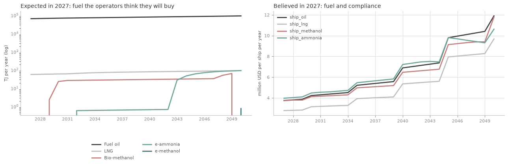
believed cost of missing the mark, this year:
eu_ets 133.4 USD/ton
fuel_eu 760.0 USD/ton
Nothing has been decided yet. This is only what the model believes.
Year by year: what each configuration expects to burn, and why#
Each panel in the cell below splits one configuration’s expected energy by fuel, for every year of this year’s look-ahead. The strip under the bars explains why a dual-fuel ship sometimes expects to burn oil instead of alternative fuels:
no alternative fuel on offer: no port expects any supply of the alternative fuel the ship can burn yet, so oil is the only option
alternative capped by supply: alternative fuel is available but in limited quantities, and the ship buys all of its share
switching, held back by bunkering inertia: the ship would buy more of the alternative, but each year it must still buy at least 70 % of the oil it bought at that port the year before (
set_bunkering_inertia), so oil can only fall by about 30 % a yearalternative at one port, only oil at the other: the alternative fuel costs more to deliver to the other port, so the ship buys oil there
alternative on offer, oil cheaper: the supply is there, but oil plus the expected compliance cost is cheaper
on its main fuel: oil is down to the minimum pilot share the engine needs
The operators choose the fuel at each port, not for the whole voyage. A dual-fuel ship can therefore run only partly on its alternative fuel even when no supply limit binds: it buys the alternative where it is cheaper (here at Rotterdam, close to the European plants) and oil where the alternative still costs more (at San Antonio, an expensive 7,600 nm delivery from Europe).
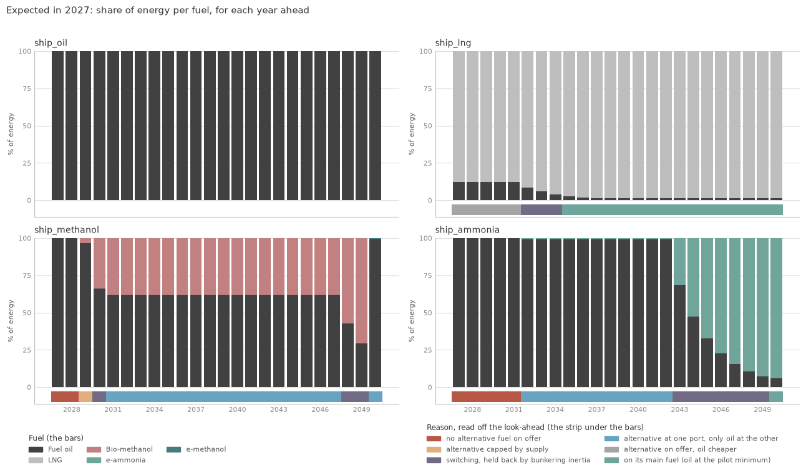
Year by year: what each configuration expects to pay#
The cell below shows what each ship type would be expected to pay each year for fuel and compliance.
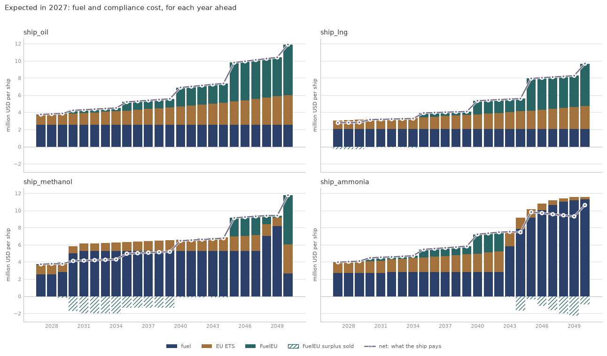
Stage 2 — Decide#
The decisions of the owners and the operators are taken in this order, based on the beliefs formed in the previous stage:
Technology (owners): efficiency equipment fitted to a ship to reduce its fuel consumption (see technology ladder paragraph)
Speed (operators): how fast to sail, within the band the deck allows
The scorecard (owners): an investment freight rate per configuration, which sets each configuration’s share of the newbuilds: the lower the rate, the larger the share
The fleet (owners): scrap the oldest hulls, retrofit hulls to another fuel when the conversion pays, and order newbuilds on the scorecard
Not every newbuild follows the scorecard, i.e. the business case. Each year, 60 % of
them copy the previous year’s mix of ship types: this is the fleet’s Inertia.
In the early years the ships are mostly oil, so most of the ships ordered are oil ships because of the inertia, even when another ship type is cheaper on paper.
The technology ladder#
The owners do not decide on each efficiency measure separately. Navigate sorts the measures by CAPEX, cheapest first, and builds a ladder of cumulative packages: no measure, the cheapest one, the two cheapest, and so on up to all seven. The owners choose between these packages, so a ship that fits a measure also fits every cheaper measure:
a newbuild can take any package. Each package gets a share of the newbuilds by its NPV: the energy it saves, valued at the investment signal, minus its CAPEX and OPEX
an existing ship, at its five-yearly retrofit cycle, can only climb from the package it already has: it stays where it is, or adds one or more of the next measures
The ladder in this deck, from the cheapest measure up:
exhaust-gas boiler → lighting system → variable frequency drive → propeller improvement devices → hull painting → air lubrication → Flettner rotor
Run the next cell to see what decisions owners and operators have taking for the current year.
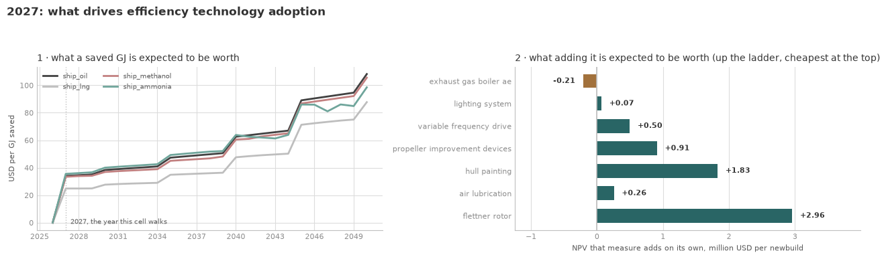
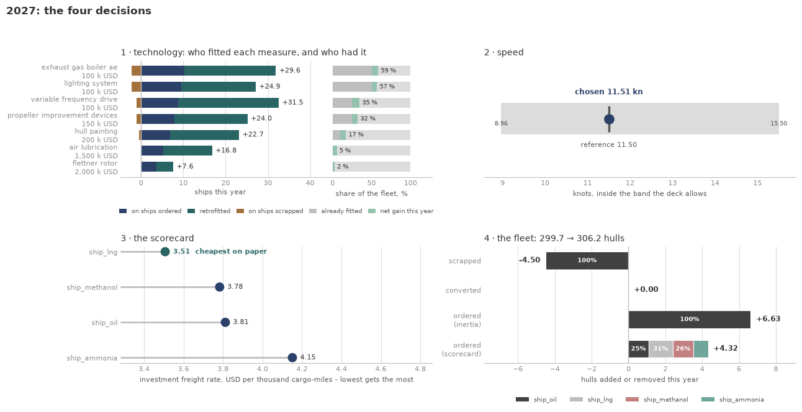
What the fleet looks like now#
The cell below shows what the fleet looks like at the end of the year (by age) after scrapping the old ships and ordering the new ones.
# @title Figure: the fleet after the first year's decisions
# Stage 0's own function, one step later: what the next year inherits is what this one decided.
# Scaled with the first year, so the change between the two figures is the decision.
fig, axes = plt.subplots(1, 2, figsize=(11.5, 3.6),
gridspec_kw={"width_ratios": [2.5, 1]})
draw_inherited(STEP_EARLY + 1, axes, scale_over=(STEP_EARLY, STEP_EARLY + 1))
axes[0].set_title(f"{YEARS[STEP_EARLY + 1]}: the fleet after {FOCUS_YEARS[0]}'s decisions",
fontsize=10, color=INK, loc="left")
fig.tight_layout()
plt.show()
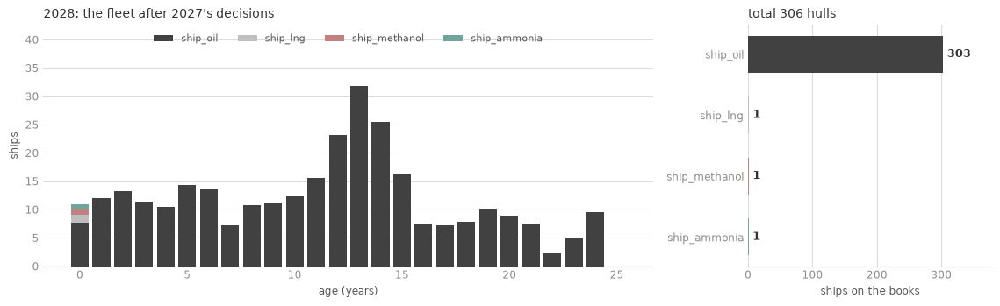
Stage 3 — The producers decide too#
The fuel producers act after the fleet owners and operators. First, old plants retire and finished plants start producing. Then their step has the same structure: look ahead, decide, and commit.
In the model, the producers aim to fill the expected unmet demand for each fuel, as far as their build limit and feedstock allow.
Look ahead:
Expected unmet demand: for each fuel and each year ahead, the producers take what the fleet operators expect to buy and subtract what the existing plants and the plants under construction will make. What is left is the expected unmet demand.
Decide which plants to start, and how many:
Repeat: as for the ships, part of the build repeats last year’s (
Inertia): 60 % of last year’s plants, in the same mix, and their output is taken off the expected unmet demand.Score: the fuel producers score how “demanded” each fuel plant is: the average expected unmet demand for its fuel over the plant lifetime, discounted so the first years count most.
Choose: the rest of the year’s build is shared out: between fuels by score (
FuelDemandSensitivity), and between plants of the same fuel (with different processes) by delivered cost (FuelCostSensitivity).Build: each plant gets its share of the year’s build limit (
MaximumDevelopment), capped by the feedstock left and by the expected unmet demand in the year it opens.
Commit: the plants started cannot be cancelled, and running plants produce at full capacity whatever the fleet operators end up buying. The producers then publish a new supply outlook (running plants, plants under construction and the plants they expect to add later), which becomes each port’s fuel supply and sets its price.
Check navigate/fuel/supply_demand.py and navigate/fuel/producer/producer_planning.py for more details.
1. Look ahead: the expected unmet demand#
The demand is the one the fleet operators expected in Stage 1, and the supply the producers’ own projection from the end of the previous year. The lag is intentional: the producers act on the demand expected before the owners’ newbuild and retrofit decisions.
In the figure below, the solid line is the demand the producers see this year for the years ahead, the dashed line what their running and ordered plants will supply, and the shaded area between them the expected unmet demand.
# @title Stage 3 figure: look ahead, the expected unmet demand
from matplotlib.colors import to_rgba
from matplotlib.patches import Patch
from matplotlib.transforms import blended_transform_factory
if "producer_balance" not in snap or "plant_cohorts" not in snap:
raise RuntimeError(
"These snapshots predate the producer records. Re-run the run_case "
"cell above, then this one.")
PLACE = {"americas": "Patagonia", "europe": "Europe"}
# One panel per fuel the producers can make, in Navigate's own fuel order.
PRODUCED = fuel_sorted({base.nodes.plants[p].fuel.get_name() for p in snap["producer"]})
def _style(ax):
ax.grid(color=GRID, lw=0.8)
ax.set_axisbelow(True)
ax.tick_params(colors=TICK, labelsize=8, length=0)
for side in ("top", "right"):
ax.spines[side].set_visible(False)
for side in ("left", "bottom"):
ax.spines[side].set_color(AXIS)
def draw_supply_demand(step, axes, show_plant=True):
"""Steps 2, 4 and 6 for one year, one panel per fuel.
Demand and supply are what the producers saw just before they planned: the
supply of their running and ordered plants, and demand as that supply plus
their shares of the gap. The bar is a new plant's lead time, and the dot what
one plant started this year adds when it opens: the gap in its opening year
(MinimumOfftakeDuration, one year by default, sets that window).
With show_plant=False only the look-ahead is drawn: demand, supply, the gap.
"""
seen = snaps[step]["producer"]
balance = snaps[step]["producer_balance"]
year = YEARS[step]
stop = min(len(YEARS), step + 14)
ahead = YEARS[step:stop]
curves = {}
for fuel in PRODUCED:
lhv = float(base.nodes.fuels[fuel].lower_heating_value.get())
mine = [v for (_owner, f), v in balance.items() if f == fuel]
supply = sum(v["supply"] for v in mine)[step:stop] * lhv / 1e3
curves[fuel] = (supply, supply + sum(v["gap"] for v in mine)[step:stop] * lhv / 1e3)
# one scale for every fuel, so the panels compare
top = max(float(np.nanmax(np.r_[s, d])) for s, d in curves.values())
for ax, fuel in zip(axes, PRODUCED):
supply, demand = curves[fuel]
colour = fuel_colour(fuel)
ax.plot(ahead, demand, lw=2.2, color=colour, zorder=3,
label="demand the producers see")
ax.plot(ahead, supply, lw=1.8, color=SUBINK, ls="--", zorder=3,
label="supply of running and ordered plants")
ax.fill_between(ahead, supply, demand, where=demand > supply, interpolate=True, color=colour,
alpha=.25, linewidth=0, zorder=2, label="expected unmet demand")
plants_ = [p for p in seen if base.nodes.plants[p].fuel.get_name() == fuel]
d = seen[plants_[0]]
lead = int(round(d["lead_time"]))
opens = year + lead
size = max(seen[p]["plants_built"] * seen[p]["plant_output"] * seen[p]["lhv"] / 1e3
for p in plants_)
ax.set_ylim(0, top * 1.45 if top > 0.05 else 1.)
if show_plant:
band = blended_transform_factory(ax.transData, ax.transAxes)
ax.barh(0.06, lead, left=year, height=0.07, transform=band, color=colour,
alpha=.35, zorder=2)
ax.annotate(f"{lead} yr to build", (year + lead / 2, 0.06), xycoords=band,
ha="center", va="center", fontsize=8, color=INK)
if size > 0.05 and opens <= ahead[-1]:
base_ = float(supply[lead])
ax.plot([opens] * 2, [base_, base_ + size], lw=3, color=colour, zorder=4,
solid_capstyle="butt")
ax.plot(opens, base_ + size, "o", ms=9, color=colour,
markeredgecolor="white", markeredgewidth=1.5, zorder=5)
ax.annotate(f"opens {opens}:\n+{size:,.1f} TJ/yr", (opens, base_ + size),
textcoords="offset points", xytext=(8, 6), fontsize=8.5,
color=INK, fontweight="bold")
else:
gap_open = float(demand[lead] - supply[lead]) if lead < len(ahead) else 0.
ax.annotate("no unmet demand when it\nwould open: nothing started"
if gap_open < 0.05 else "nothing started",
(0.04, 0.8), xycoords="axes fraction", ha="left",
fontsize=8.5, color=SUBINK)
ax.set_title(fuel_label(fuel), fontsize=10, color=INK, loc="left")
ax.set_xlabel("year", fontsize=8, color=SUBINK)
ax.xaxis.set_major_locator(MaxNLocator(integer=True, nbins=5))
_style(ax)
axes[0].set_ylabel("TJ per year", fontsize=8, color=SUBINK)
return axes[0].get_legend_handles_labels()
def plant_cohorts(step):
"""TJ/yr per (age, plant) at the END of a step: after its decisions.
Ages are whole years. A plant still under construction has a negative age,
the years until it opens.
"""
frame = pd.DataFrame(snaps[step]["plant_cohorts"], columns=["plant", "age", "tj"])
if frame.empty:
return frame
frame["age"] = np.round(frame["age"]).astype(int)
return frame.pivot_table(index="age", columns="plant", values="tj",
aggfunc="sum", fill_value=0.)
def draw_plants(step, axes, scale_over=None, legend=True):
"""The plants after a year's decisions, the way Stage 0 draws the fleet."""
ax1, ax2 = axes
steps = tuple(scale_over) if scale_over else (step,)
by_age = plant_cohorts(step)
plants_ = sorted(base.nodes.plants, key=lambda p: (
PRODUCED.index(base.nodes.plants[p].fuel.get_name()),
base.nodes.plants[p].region.get_name()))
def colour_of(p):
return fuel_colour(base.nodes.plants[p].fuel.get_name())
def label(p):
plant = base.nodes.plants[p]
return (f"{fuel_label(plant.fuel.get_name())} · "
f"{PLACE.get(plant.region.get_name(), plant.region.get_name())}")
# left: one stack per fuel; the right panel tells the sites apart
if not by_age.empty:
bottom = np.zeros(len(by_age))
for fuel in PRODUCED:
members = [p for p in plants_ if p in by_age
and base.nodes.plants[p].fuel.get_name() == fuel]
if not members:
continue
values = by_age[members].sum(axis=1).to_numpy()
# solid when running, light when under construction, as on the right
building = by_age.index < 0
colour = fuel_colour(fuel)
ax1.bar(by_age.index, values, bottom=bottom, width=.82,
color=[to_rgba(colour, .3) if b else colour for b in building],
edgecolor=[("none" if v <= 0 else colour if b else "white")
for b, v in zip(building, values)],
linewidth=.6, label=fuel_label(fuel), zorder=3)
bottom += values
ax1.axvline(-0.5, color=AXIS, lw=1, ls=":", zorder=2)
ax1.annotate("under construction", (-0.7, 0.97), xycoords=("data", "axes fraction"),
ha="right", va="top", fontsize=8, color=SUBINK)
ax1.annotate("running", (-0.3, 0.97), xycoords=("data", "axes fraction"),
ha="left", va="top", fontsize=8, color=SUBINK)
ages = [a for s in steps for a in plant_cohorts(s).index] or [0]
ax1.set_xlim(min(min(ages), -1) - 1, max(max(ages), 1) + 1)
peak = max((plant_cohorts(s).sum(axis=1).max() for s in steps
if not plant_cohorts(s).empty), default=1.)
ax1.set_ylim(0, peak * 1.3)
ax1.set_xlabel("age (years); negative: years until it opens", fontsize=8.5,
color=SUBINK)
ax1.set_ylabel("TJ per year", fontsize=8.5, color=SUBINK)
ax1.set_title(f"{YEARS[step]}: the plants after the producers' decisions",
fontsize=10, color=INK, loc="left")
if legend:
handles = [Patch(facecolor=fuel_colour(f), label=fuel_label(f)) for f in PRODUCED
if not by_age.empty and any(base.nodes.plants[p].fuel.get_name() == f
for p in by_age)]
handles += [Patch(facecolor=SUBINK, label="running"),
Patch(facecolor=to_rgba(SUBINK, .3), edgecolor=SUBINK, linewidth=.6,
label="under construction")]
ax1.legend(handles=handles, fontsize=7.5, frameon=False, labelcolor=SUBINK,
ncol=len(handles), loc="upper center", bbox_to_anchor=(0.5, -0.2))
# right: what it adds up to, running and under construction apart
totals = {}
for p in plants_:
col = by_age[p] if (not by_age.empty and p in by_age) else pd.Series(dtype=float)
totals[p] = (float(col[col.index >= 0].sum()), float(col[col.index < 0].sum()))
span = max(sum(t) for s in steps for t in [
(float(plant_cohorts(s)[p][plant_cohorts(s).index >= 0].sum()),
float(plant_cohorts(s)[p][plant_cohorts(s).index < 0].sum()))
for p in plants_ if not plant_cohorts(s).empty and p in plant_cohorts(s)] + [(1., 0.)])
for i, p in enumerate(plants_):
colour = colour_of(p)
run, build = totals[p]
ax2.barh(i, run, height=.6, color=colour, edgecolor="white",
linewidth=.6, zorder=3)
ax2.barh(i, build, left=run, height=.6, color=to_rgba(colour, .3),
edgecolor=colour, linewidth=.8, zorder=3)
ax2.annotate(f"{run + build:,.1f}", (run + build + span * .03, i), va="center",
fontsize=8.5, color=INK, fontweight="bold")
ax2.set_yticks(range(len(plants_)), [label(p) for p in plants_])
ax2.invert_yaxis()
ax2.set_xlim(0, span * 1.3)
ax2.set_xlabel("TJ per year, running + under construction", fontsize=8.5,
color=SUBINK)
ax2.set_title("total per plant", fontsize=10, color=INK, loc="left")
for ax in (ax1, ax2):
_style(ax)
ax1.grid(axis="x", visible=False)
ax2.grid(axis="y", visible=False)
fig, axes = plt.subplots(1, len(PRODUCED), figsize=(13.5, 4.2))
fig.suptitle(f"{FOCUS_YEARS[0]}: the expected unmet demand the producers see", fontsize=12, color=INK,
x=0.01, ha="left", fontweight="bold")
handles, labels_ = draw_supply_demand(STEP_EARLY, np.atleast_1d(axes), show_plant=False)
fig.legend(handles, labels_, fontsize=8, frameon=False, labelcolor=SUBINK, ncol=3,
loc="lower center")
fig.tight_layout(rect=(0, 0.07, 1, 0.93))
plt.show()
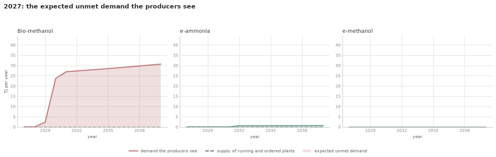
2. Decide: which plants, and how many#
In the next cell, the first figure shows, for each fuel, the plant started to meet the expected unmet fuel demand. The bar along the bottom is a new plant’s lead time, and the dot what it adds when it opens: at most the expected unmet demand in that year.
The second figure shows the plants after this year’s decisions: their output by age, with the plants still under construction at a negative age (the years until they open).
# @title Stage 3 figures: decide, which plants and how many
fig, axes = plt.subplots(1, len(PRODUCED), figsize=(13.5, 4.2))
fig.suptitle(f"{FOCUS_YEARS[0]}: the plant started for each fuel", fontsize=12, color=INK,
x=0.01, ha="left", fontweight="bold")
handles, labels_ = draw_supply_demand(STEP_EARLY, np.atleast_1d(axes))
fig.legend(handles, labels_, fontsize=8, frameon=False, labelcolor=SUBINK, ncol=3,
loc="lower center")
fig.tight_layout(rect=(0, 0.07, 1, 0.93))
plt.show()
fig, axes = plt.subplots(1, 2, figsize=(11.5, 3.9), gridspec_kw={"width_ratios": [2.2, 1]})
draw_plants(STEP_EARLY, axes)
fig.tight_layout()
plt.show()
by_owner = {}
for _plant, _d in snap["producer"].items():
by_owner.setdefault(_d["producer"], []).append(_plant)
print("No producer came near its build limit, so the shares of Choose decided nothing:")
for _owner, _members in by_owner.items():
_cap = snap["producer"][_members[0]]["max_development"]
_used = sum(snap["producer"][p]["plants_justified"] for p in _members)
print(f" {_owner:20} {_used:8.4f} of {_cap:6.2f} plants "
f"({_used / _cap * 100:5.2f}% of the limit)")
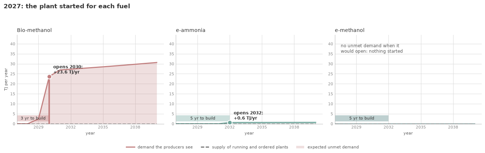
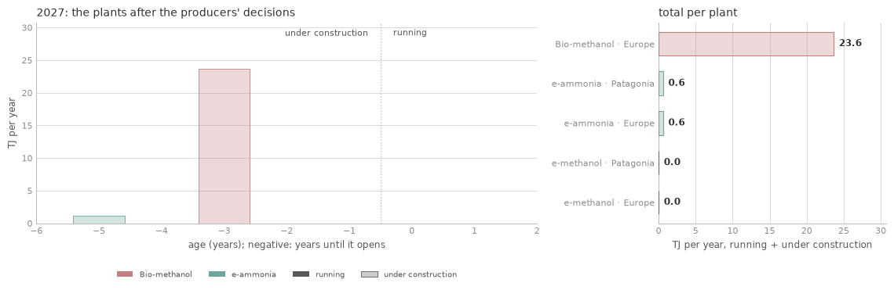
No producer came near its build limit, so the shares of Choose decided nothing:
producer_efuel 0.0003 of 8.31 plants ( 0.00% of the limit)
producer_biofuel 0.0024 of 8.31 plants ( 0.03% of the limit)
3. Commit#
At the end of their decision step, the producers publish their supply outlook. It tells the fleet operators what fuel they can buy this year and what they can expect in the years ahead. Two points in it matter:
The plants they expect to add later: the outlook also counts plants not ordered yet. It assumes each producer will build every year as many plants as its build limit and feedstock allow, whether or not the fuel is needed. So the fleet operators expect more alternative fuel in the future than the producers are building today.
The fuel price at the ports: the average cost of producing and delivering the fuel, weighted by each plant’s output, with no margin.
Not shown in this example#
The producers’ step has a few more settings that this deck leaves at their defaults, so they change nothing here:
When several producers make the same fuel, they fill its expected unmet demand in proportion to how much of that fuel each can add this year, given its build limit and the feedstock it has left. For example, a producer that could add three times as much as another takes three quarters of it. Here each fuel has a single producer.
MinimumOfftakeDurationsizes a plant on the smallest expected unmet demand over several years instead of its opening year alone (one year by default).MaximumRampUplimits how fast a producer can raise its build rate from one year to the next (no limit by default).When the build limit binds and a plant reaches its cap, its unused share goes to the producer’s other plants.
set_export_distributionsets how a producer’s output is split between the ports (evenly by default), and the delivered cost that compares its plants is averaged with the same weights.
Stage 4 — Fleet commit: final bunkering algorithm#
This step runs the “real” bunkering algorithm for this year: the same solve as in Stage 1, but on the fleet as Stage 2 left it (new ships, speeds and technologies) and on the fuel the producers actually supply this year.
The result can differ slightly from the Stage 1 belief, since the fleet and the fuel supply have changed in the meantime. But this is what the ships actually burn and pay this year. The figures below show the bill and the fuel of one ship of each configuration, whether the fuel the plants made was burned, and what the transport cost is. When checking the results, remember that ordering a dual-fuel ship and burning its fuel are two different decisions: in the early years every ship, including the dual-fuel vessels, can still burn oil.
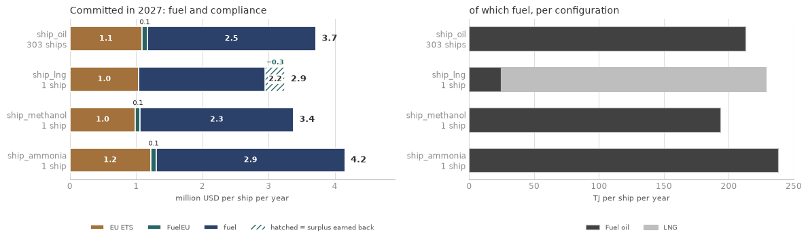
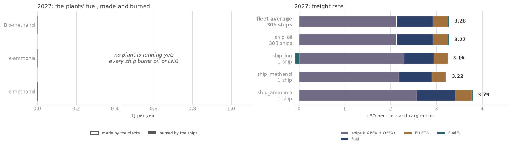
After the year is completed, every belief is overwritten by next year’s look-ahead.
Later on: the same step again#
Tadaaa, we are now some years later (2040 by default; the selected year can be changed at the beginning of Part 1). The logic is the same as before but the conditions have changed.
2027 2040
------------------------------------------------------------
eu_ets: unit cost, USD/ton 133.39 252.00
fuel_eu: unit cost, USD/ton 760.00 760.00
fuel_eu limit, gCO2eq/MJ 89.34 62.90
conversions in 2027: none - no cohort was both in a retrofit cycle and worth converting
conversions in 2040: none - no cohort was both in a retrofit cycle and worth converting
Stage 0 — Initialisation (the first and the later year)#
Each year starts from what it inherits: the fleet with its age structure, the plants already sanctioned, and this year’s terms of the two regulations.
2027 vs 2040
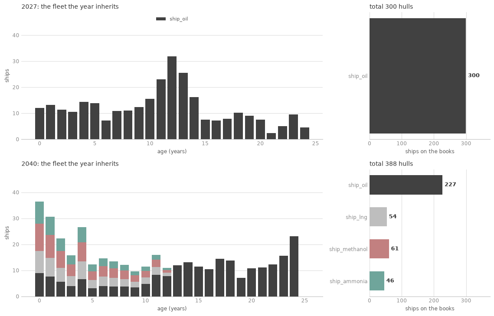
Stage 1 — Look ahead (the first and the later year)#
The operators again calculate the cheapest bunkering strategy for every year ahead, given the expected fuel and compliance costs and the fuel the ports can supply. The figures compare what they expect to buy, and what they expect it to cost.
2027 vs 2040
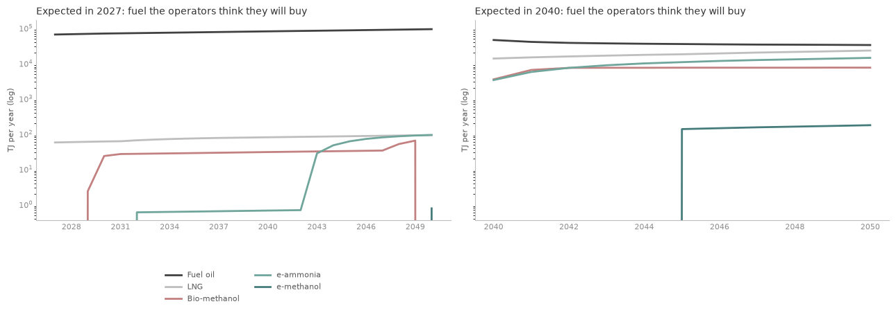
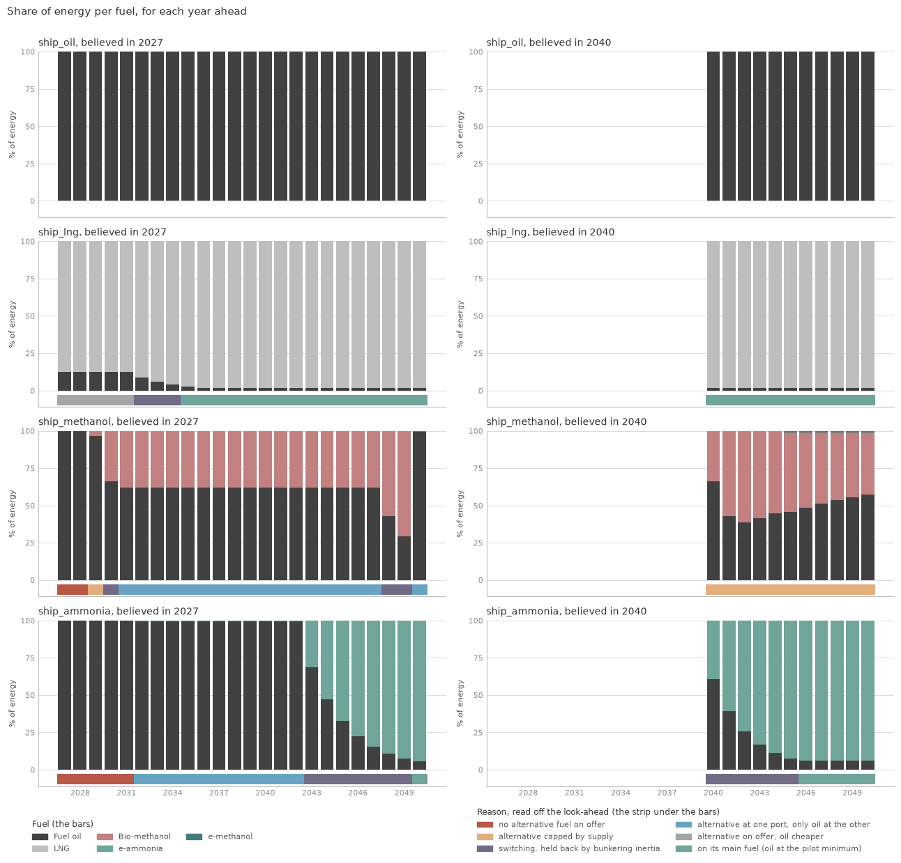
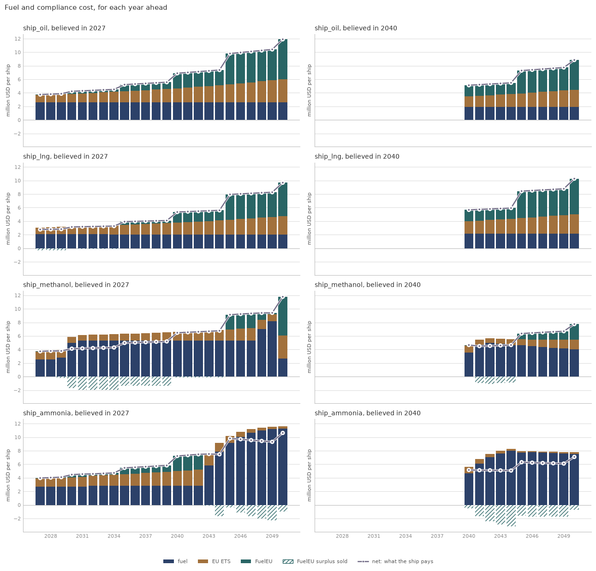
Stage 2 — Decide (the first and the later year)#
The owners and operators take the same four decisions, in the same order: technology, speed, the scorecard and the fleet. Each column shows one year.
2027 vs 2040
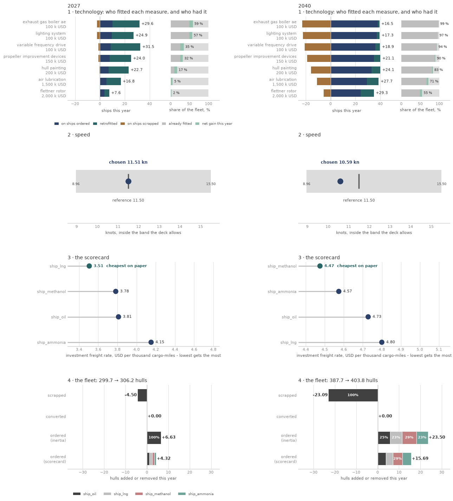
Stage 3 — The producers decide too (the first and the later year)#
The producers again build towards the expected unmet demand, as far as their build limit and feedstock allow. Each row shows one year.
# @title Stage 3 figures, the two years
from IPython.display import Markdown, display
display(Markdown(f"**{FOCUS_YEARS[0]} vs {FOCUS_YEARS[1]}**")) # the two years walked, as chosen above
# Stage 3, both years, one row each. Every panel keeps its own scale: the later
# year's gaps and plants are many times the first year's.
fig, axes = plt.subplots(2, len(PRODUCED), figsize=(13.5, 7.8))
for row, step in enumerate((STEP_EARLY, STEP_LATE)):
handles, labels_ = draw_supply_demand(step, axes[row])
axes[row][0].annotate(str(YEARS[step]), (-0.3, 1.12), xycoords="axes fraction",
fontsize=12, color=INK, fontweight="bold")
fig.legend(handles, labels_, fontsize=8, frameon=False, labelcolor=SUBINK, ncol=3,
loc="lower center")
fig.tight_layout(rect=(0, 0.04, 1, 1))
plt.show()
fig, axes = plt.subplots(2, 2, figsize=(11.5, 7.6), gridspec_kw={"width_ratios": [2.2, 1]})
for row, step in enumerate((STEP_EARLY, STEP_LATE)):
draw_plants(step, axes[row], legend=row == 1)
fig.tight_layout()
plt.show()
2027 vs 2040
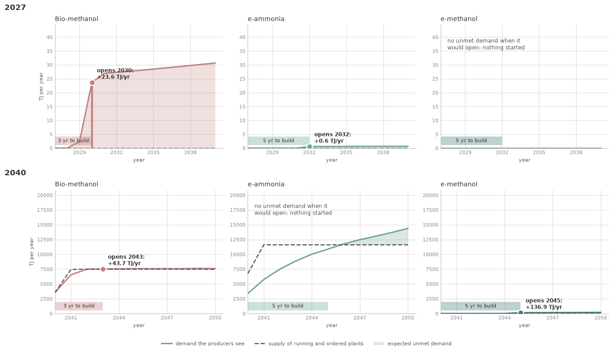
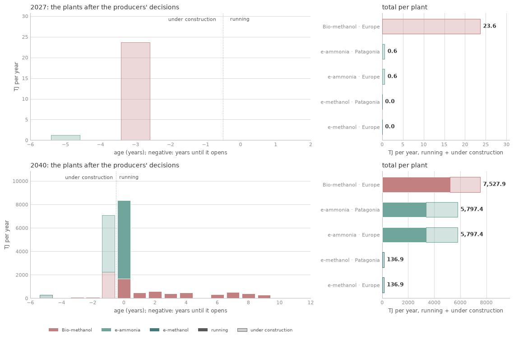
Stage 4 — Commit: the bunkering algorithm that binds (the first and the later year)#
The year is committed with the real bunkering algorithm, on the fleet and the fuel supply of that year. Later on, the dual-fuel ships burn more of their own fuel, and part of what the plants make can go unburned.
2027 vs 2040
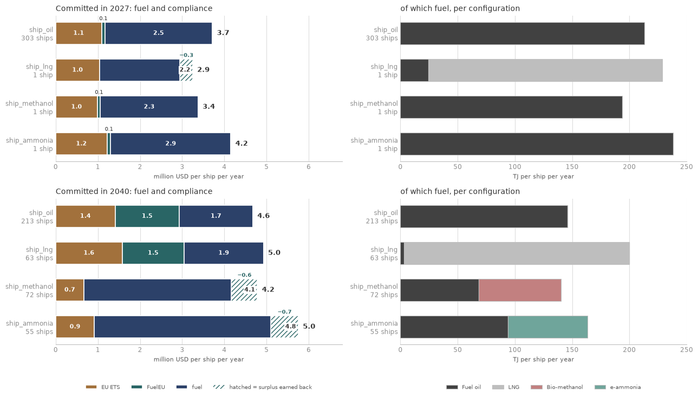
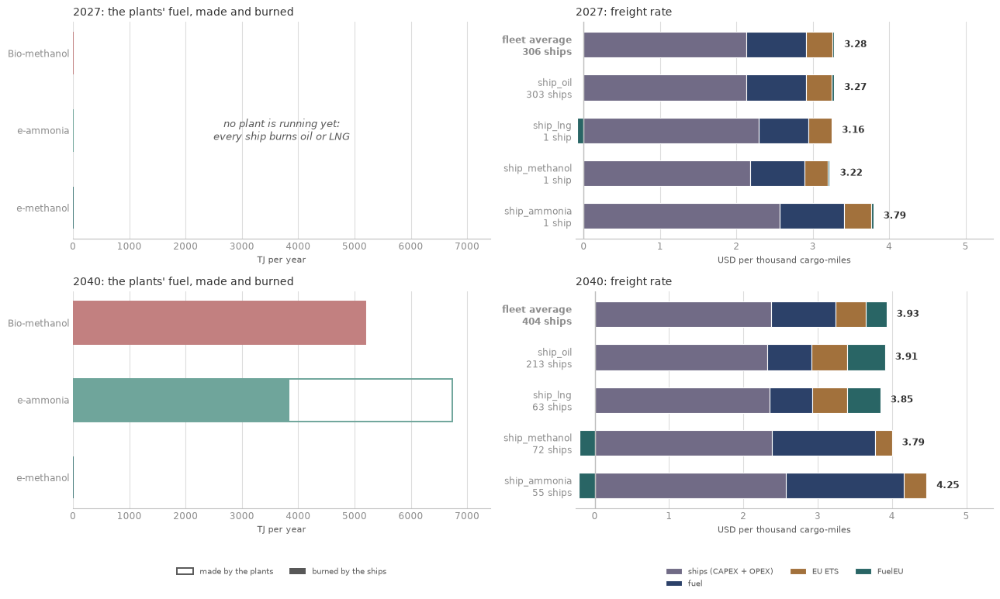
Results for a full simulation#
In this section, we analyse the results of the full simulation instead of looking at specific years in detail.
1. Fleet evolution#
What the fleet became, and how it got there#
The next cell shows how the fleet evolved over time and the number of newbuild and retrofitted ships.
Each ship can only be retrofitted every 5 years (RetrofitFrequency, 5 by default). Navigate groups the ships by age, and each age group decides on its own, so in a given year only four or five of the twenty-five age groups are allowed to retrofit.
The fleet grows from 300 hulls to roughly 490, because TradeGrowth is switched on in includes/fleet.inc — about 2.2 % a year, easing to 1.4–1.5 % from 2030.
fleet 300 -> 492 hulls; over the horizon 480 ordered, 13 converted, 288 scrapped
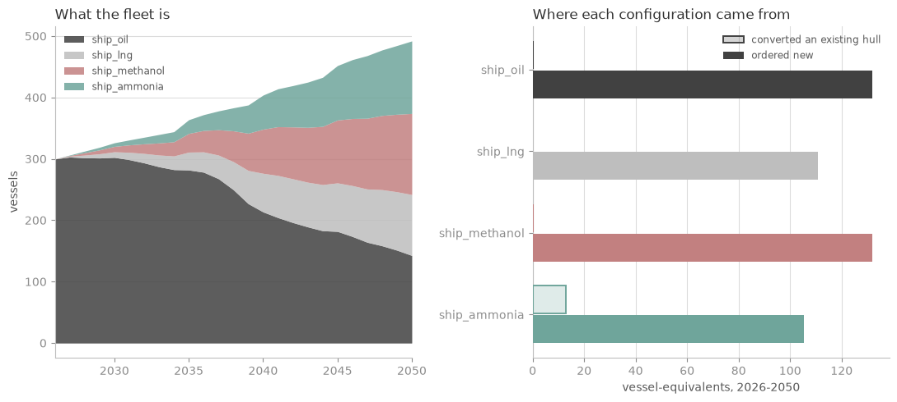
Energy efficiency over the horizon#
The next cell shows which efficiency technologies are fitted to the fleet over time, and how much energy they save.
technology energy saving: 2026 1.3% 2038 12.9% 2050 20.5%
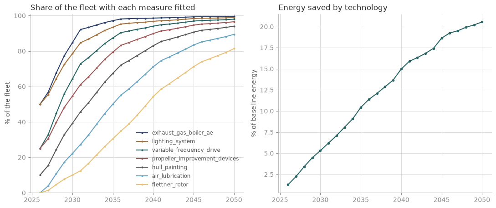
2. Fuel supply and demand#
What each fuel costs to make#
The next cell shows the calculated production cost of each fuel, per GJ, for one plant sanctioned in 2027 and one sanctioned in 2040, at the plant size used in that year. It covers bio-methanol as well as the e-fuels.
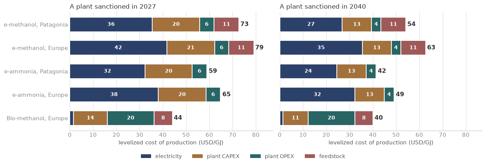
What the fleet bunkers, and when#
The next cell shows the energy the fleet bunkers each year, by fuel, first for the whole fleet and then for each ship type. A dual-fuel ship that bunkers oil counts as oil here.
Share of total energy over 2026-2050:
Fuel oil 74.0%
LNG 12.8%
Bio-methanol 5.7%
e-ammonia 7.2%
e-methanol 0.3%
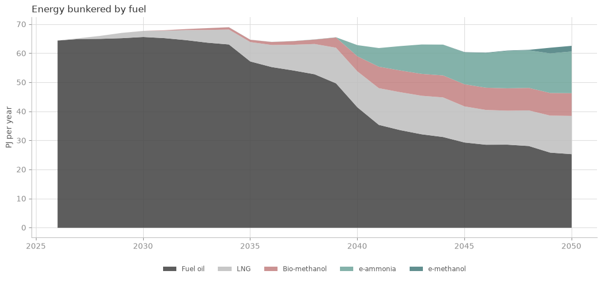
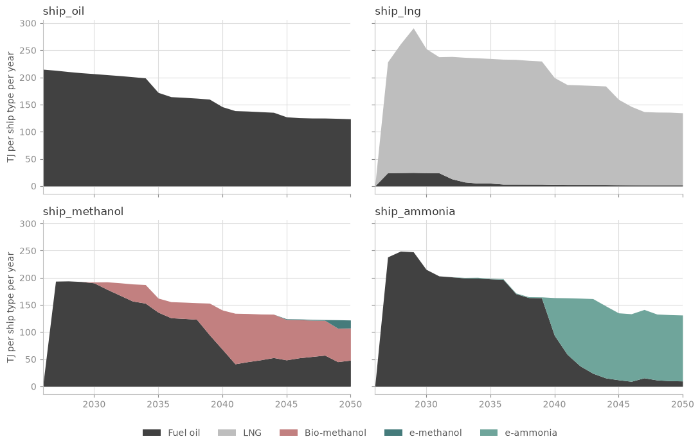
What the feedstock ceilings decided#
The next cell shows the two feedstock ceilings of this example against what the plants actually used: gasification biomass, which limits bio-methanol and binds from 2041, and biogenic CO2, which limits e-methanol and binds in the last two years, from 2049. Once a ceiling binds, the fuel it limits cannot grow any further, and any extra demand has to go to other fuels.
Gasification feedstock ceiling 0.95 Mt/yr by 2050, binds from 2041, in 10 of 25 years
Biogenic CO2 (PS) ceiling 0.14 Mt/yr by 2050, binds from 2049, in 2 of 25 years
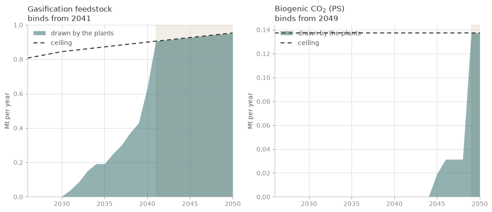
What the producers sanctioned, and the lag before it arrives#
The operators and the fuel producers never talk directly. The producers build plants for the fuel the operators expect to buy, and the operators can only buy what the producers make. This creates a delay, on purpose: the producers use the operators’ expectation from the start of the year, before that year’s new ships and retrofits, and a plant then takes several years to build.
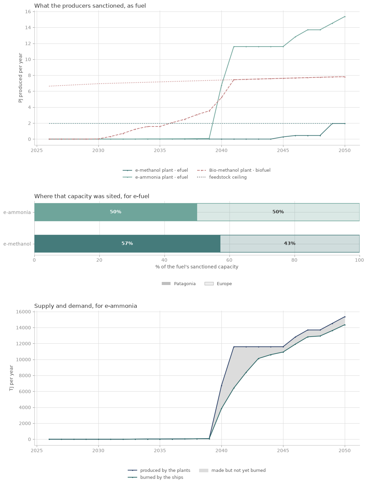
first capacity sanctioned: 2028
first e-ammonia burned: 2032
production vs delivery, largest gap over the horizon: 0.0 TJ/year
The e-fuel producer owns both sites for each of its fuels, so it splits
its build between them on delivered cost instead of picking one.
3. What the regulations did#
The next cell shows the GHG intensity each ship type achieved with the fuel it burned, against the FuelEU limit: on green ground it earns surplus, on red ground it has to buy compliance. The right panel shows the fleet’s well-to-wake emissions over time.
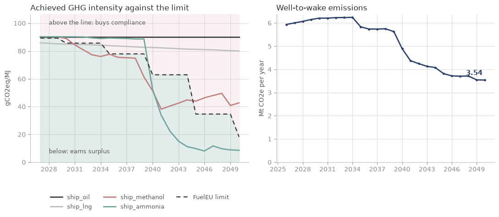
well-to-wake 2026: 5.93 Mt/yr 2050: 3.54 Mt/yr over the horizon 127.8 Mt
EU ETS 2027: 334 M USD 2050: 575 M USD over the horizon 11,544 M USD
FuelEU 2027: 23 M USD 2050: 939 M USD over the horizon 8,217 M USD
ship_oil below the limit in 0 of 24 years
ship_lng below the limit in 8 of 24 years
ship_methanol below the limit in 14 of 24 years
ship_ammonia below the limit in 11 of 24 years
4. What the trade cost#
The next cell shows:
The freight rate on the fleet: what the trade cost in that year, given the fuel prices and compliance bills that actually materialised.
The investment freight rate on each vessel configuration: the forward-looking, levelised cost of transport. This is the number the discrete-choice model compares between configurations, so it is what explains why one was picked. A configuration that is not in the fleet in a given year has no value and simply does not plot.
These numbers are calculated before any redistribution mechanisms of the collected taxes.
freight rate 2026: 3.27 2050: 4.74 (+45%)
In the right-hand panel, whichever configuration sits lowest in a given
year is the one most likely to be ordered that year. That crossover is
the mechanism behind the fuel mix in section 2.
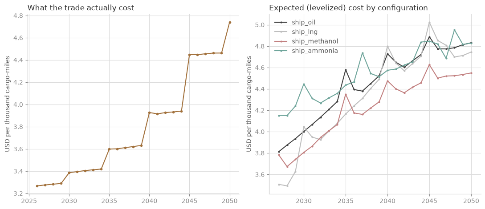
Summary: who decided what#
Result you saw |
Actor |
Mechanism |
Turn it with |
|---|---|---|---|
Which fuel is bunkered where, each year |
operators |
linear program, all ships at once, cost minimising |
prices, supply, regulation, |
Sailing speed |
operators |
cost-minimising speed, energy valued at the LP shadow price |
|
Efficiency technology fitted |
owners |
logit on NPV, energy saved valued at the LP shadow price |
|
Fuel conversion (retrofit) |
owners |
logit on NPV against ship CAPEX |
|
Newbuild mix |
owners |
two-axis logit on levelised cost of transport, partly repeating last year’s mix |
|
Scrapping |
owners |
age rule, not a choice at all |
|
Which plants get built |
fuel producers |
two-axis logit on demand, then delivered cost, partly repeating last year’s mix |
|
Limits and penalty prices |
regulator |
set in the deck, no reaction to the fleet |
the regulation files |
Cargo carried |
nobody |
exogenous, no demand response |
|
In Navigate, owners and operators are represented together by one node, the
Fleet, which stands for the whole segment. The split above shows who would take
each decision in practice: operators run the ships, owners decide what ships
there are and what is fitted to them.
Part 2: How much behaviour matters#
The behavioural traits of the owners turn a cost gap into a share of the fleet (seen in Session 3). The next cells let you check how changing those traits could affect the results against the reference case:
INTER_FUEL(InterFuelSensitivity): how sharply owners pick between fuel types when ordering a newbuild.FUEL_CONVERSION(FuelConversionSensitivity): how decisively owners retrofit the hulls they already own.TECHNOLOGY(TechnologySensitivity): how decisively owners fit efficiency technology.INERTIA(Inertiaon theFleet): the share of each year’s newbuilds that copy the previous year’s mix of ship types, whatever the costs. Only the rest is chosen on the scorecard.
Run the next cell to set up the sensitivity run.
the behavioural traits in the deck, as odds ratios
INTER_FUEL newbuild mix, between fuel types 0.75
FUEL_CONVERSION whether to retrofit an existing hull 2.00
TECHNOLOGY whether to fit efficiency technology 2.00
and the share of newbuilds that copy last year's mix
INERTIA newbuild mix, repeating last year 0.60
Change the traits in the next cell and run it: it redraws the curves with your values, then solves your scenario and compares its results with the reference and with the scenario you ran before it.
# ===========================================================================
# YOUR SCENARIO. Set a trait, then run this cell: it redraws the curves,
# solves your scenario (about a minute) and compares it with the reference
# and with the scenario you ran before it.
#
# As an example, INTER_FUEL is set to 0.3: owners pick between fuel types far
# more sharply than the deck's 0.75. Set it back to 0.75 to start from the
# reference.
#
# BEHAVIOR. Not a price and not a rule: how the owners themselves decide, one
# lever per decision. The first three are the odds ratios themselves, NOT
# multipliers, and they start at what the deck says. Which way sharpens
# differs by metric. INERTIA is a share of the newbuilds, from 0 to 1.
#
# suggested span which way is sharper
INTER_FUEL = 0.3 # 0.3 - 0.95 LOWER is sharper: LCOT, lower-is-better
FUEL_CONVERSION = 2.0 # 1.2 - 16 HIGHER is sharper: NPV against ship CAPEX
TECHNOLOGY = 2.0 # 1.2 - 16 HIGHER is sharper: NPV on the measure
INERTIA = 0.6 # 0 - 0.9 share of newbuilds copying last year's mix
# ===========================================================================
run_your_scenario()
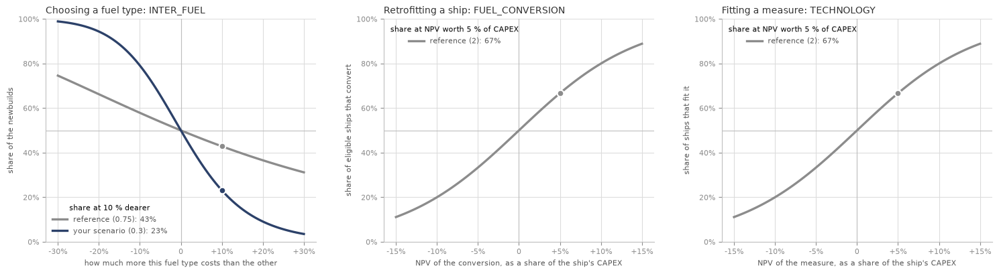
solving your scenario:
INTER_FUEL 0.3
reference yours change
well-to-wake in 2050, kt/yr 3,541 3,910 +10.4 %
cumulative, kt 127,781 131,002 +2.5 %
alternative fuels in 2050, % 38.5 31.8 -6.7 pp
freight rate in 2050, USD/k mile 4.74 4.72 -0.4 %
(change: yours against the reference)
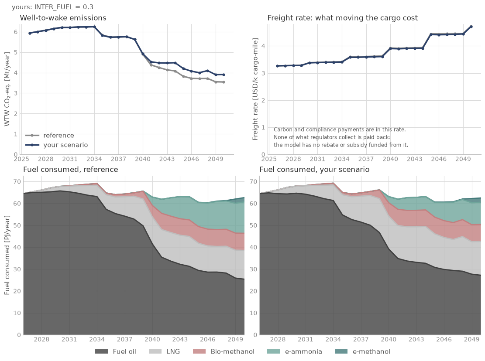
what moved most, in percentage points of the fuel mix:
LNG +3.3 pp
e-ammonia -2.3 pp
Fuel oil -1.1 pp
Bio-methanol +0.1 pp
e-methanol +0.0 pp
Workshop sessions#
Next: Session 5: Build your own case
Each link opens the notebook in Google Colab, in a fresh session, so run it from the top.
How Navigate solves (this session)